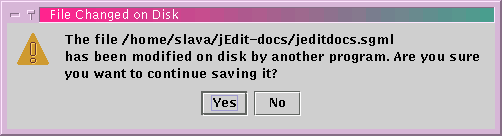

Any changes made to a buffer aren't actually stored to disk immediately (but see autosave below); instead, they are stored in the computer's high speed memory (RAM) until they are saved.
jEdit has an autosave feature that should protect against possible disasters, such as computer crashes. Every 15 seconds, all buffers with changes are written out to their respective file names, enclosed in hash ("#") characters. For example, program.c will be autosaved to #program.c#. These autosave files do not clutter up your disk; they are deleted when the buffer is explicitly saved. The point of autosaving is so that if jEdit crashes, it should be reasonably easy to recover your work - just open the autosave file(s) and copy over the autosaved data.
Another useful safety feature is file backups. When you save a buffer for the first time after opening it, its original contents are saved to the buffer's file name suffixed with a tilde ("~"). For example, paper.tex is backed up to paper.tex~. The point of backups so that if you make extensive changes to a file, and then change your mind, you can go back to the previous version.
Tip: The autosave interval and various backup-related settings can be changed in the Utilities>Global Options dialog box; see the section called The Global Options Dialog Box in Chapter 9.
The three major operating systems use different conventions to mark line endings in text files. The MacOS uses Carriage-Return (\r, ^M) for that purpose. Unix uses Newline (\n, ^J). DOS and Windows use Carriage-Return-Newline (\r\n, ^M^J). jEdit can handle all three file formats.
When a file is loaded, jEdit tries to guess the line separators used in that file. When a file is being saved, it uses the line separator it found while loading the file. The line separator can be changed manually on a per-buffer basis in the Utilities>Buffer Options dialog box; see the section called The Buffer Options Dialog Box in Chapter 9. The default for new files can be changed in the Utilities>Global Options dialog box; see the section called The Global Options Dialog Box in Chapter 9.
If you go to save a buffer and jEdit notices that another application has changed it on disk, a warning message is displayed. You may continue with the save, but the changes by the other application will be lost.
File>Reload (keyboard equivalent: F2) will reload the file from disk. If the buffer has unsaved changes, you will be asked for confirmation first.
File>Reload All Buffers (keyboard equivalent: Shift-F2) will discard your changes in all open buffers and reload them from disk. This command will ask for confirmation first. It is useful after performing a CVS checkin or similar; CVS inserts version info in all files it commits, hence they must be re-read from disk.
Figure 3-4. Warning message displayed when another application changed the file on disk

File>Save (keyboard equivalent: Control-S) will immediately save the buffer to disk, unless the buffer is a new file created with the New File command, in which case the standard save file dialog box will be displayed, prompting for a file name and destination directory.
File>Save As will prompt for an alternate file name to save the buffer to. Note that if you make some changes and "Save As", the old file will not contain the changes, but the new one will. This can be used to create a new version of the file, etc.
The file type popup menu in the save as dialog box contains a list of file types; selecting one will make only files of that type visible in the file list. This is handy when navigating directories with lots of files of different types. The filters can be changed in the File Filters pane of the Utilities>Global Options dialog box; see the section called The Global Options Dialog Box in Chapter 9.
File>Save All Buffers (keyboard equivalent: F3) will save all buffers; a confirmation dialog box is issued first.